Bienvenidos a Networktecnology
Video institucional — Protege tu información con Networktecnology
Conocenos
Somos una empresa dedicada a la instalación y mantenimiento de redes, configuración de routers y switches, diagnóstico de red y más, con detalles en nuestro portafolio disponible en página web y redes sociales..
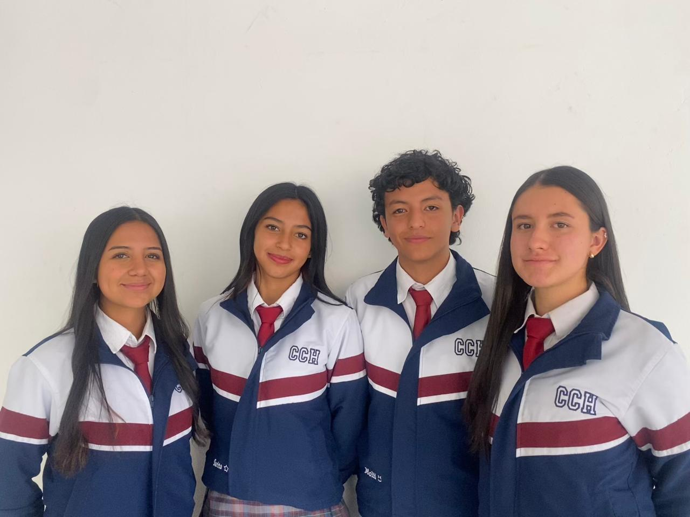
Nuestras etapas de mantenimiento de redes
Nuestros técnicos e ingenieros experimentados y calificados pueden crear de manera competente un flujo de trabajo, establecer comunicaciones y garantizar un equipo de mantenimiento de redes de TI confiable.
El mantenimiento puede ser planificado y se lleva a cabo de acuerdo con un cronograma previamente acordado, así como urgente, en caso de un problema crítico o una emergencia que requiera una intervención profesional urgente.
También proporcionamos soporte técnico remoto.
Planificación
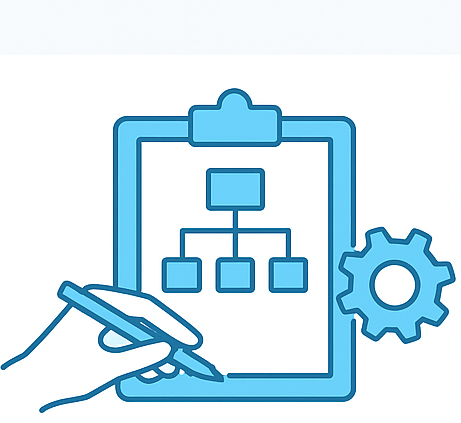
Estamos desarrollando un proyecto para la futura instalación de equipos de comunicaciones y redes.
Cualquier red informática puede ser cableada, inalámbrica o una combinación.
Los expertos discuten los detalles con usted, tienen en cuenta los requisitos, teniendo en cuenta los parámetros importantes del entorno de información.
Ingeniería de red informática
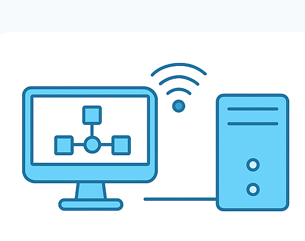
Siempre que la red no esté organizada, creamos conjuntamente un proyecto de tendido de red.
Si hay una red, recopilamos información sobre la red local y analizamos el estado del hardware y el software.
Instalación de redes
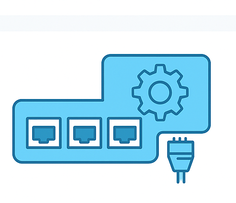
En esta etapa, resolvemos los problemas técnicos de instalación de equipos de red.
Coordinamos la compra de equipos y organizamos su trabajo.
Brindamos soporte técnico para la operación del complejo hardware de su infraestructura.
Mantenimiento de redes
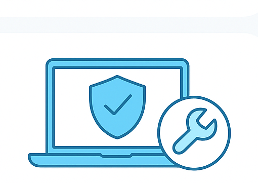
Esta es una etapa permanente de nuestro trabajo, realizamos mantenimiento sistemático de la red y administración remota continua
y creamos un sistema de información y comunicación con los mejores parámetros.
Misión
Nuestra misión es impulsar la conexión entre personas, comunidades y organizaciones mediante el desarrollo y la implementación de tecnologías de redes seguras, confiables y de alto rendimiento. Nos comprometemos a ofrecer soluciones innovadoras y sostenibles que no solo mejoren la conectividad global, sino que también fomenten la colaboración, el intercambio de conocimiento y el crecimiento social.
A través de un enfoque centrado en la excelencia, la innovación constante y la responsabilidad, buscamos reducir las brechas digitales y facilitar un mundo más interconectado, accesible y equitativo para todos.
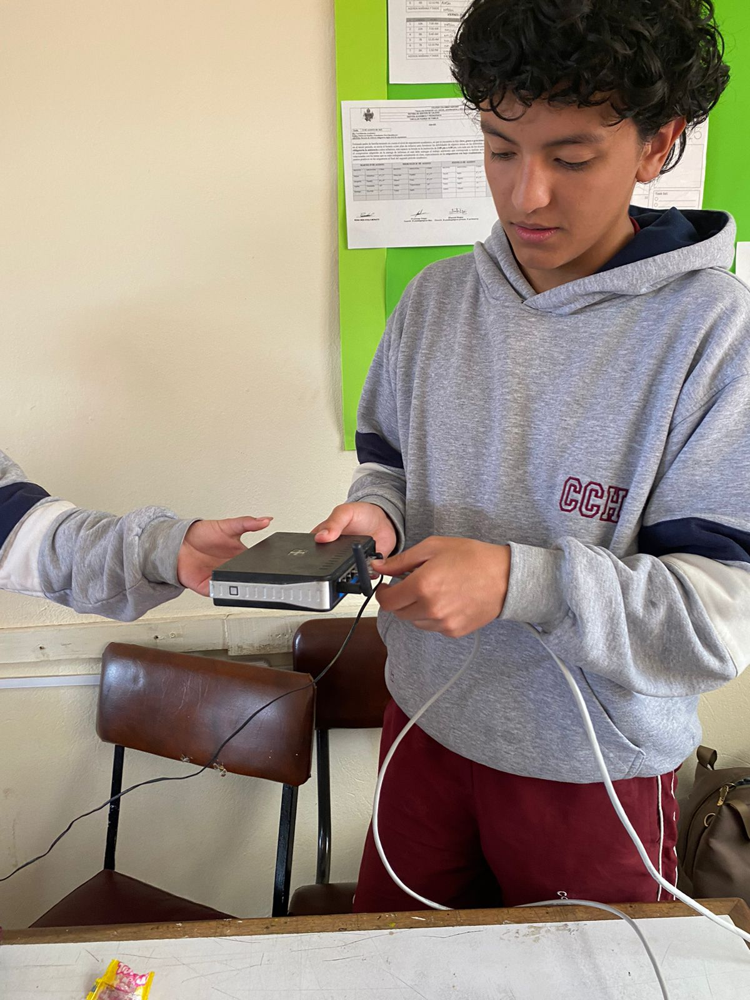
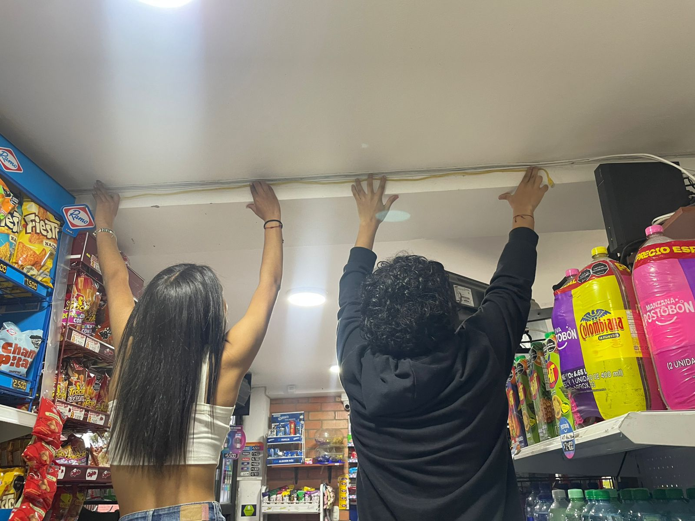
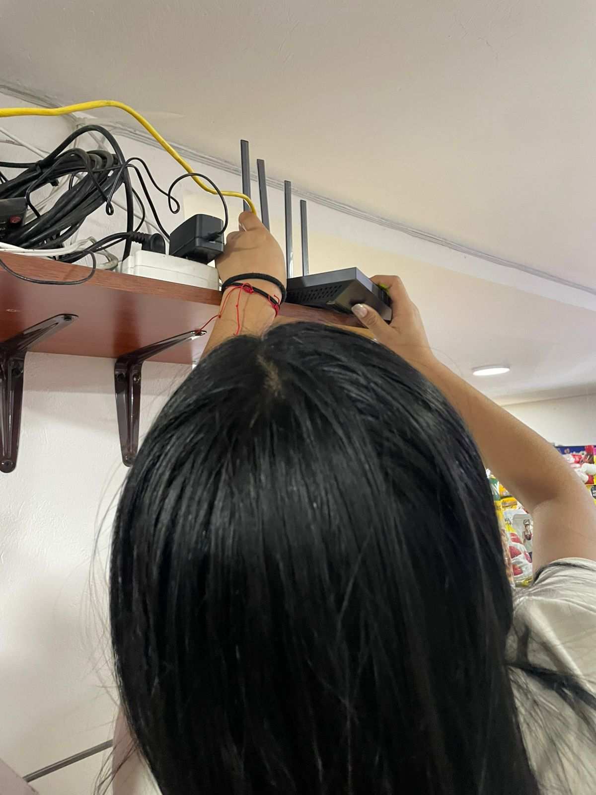
Visión
Nuestra visión es consolidarnos como referentes globales en el diseño, implementación y gestión de soluciones de redes avanzadas, innovadoras y seguras, que respondan a los desafíos presentes y futuros de la conectividad digital. Aspiramos a ser reconocidos por ofrecer un servicio al cliente excepcional, caracterizado por la cercanía, la confiabilidad y la excelencia operativa.
Nos proyectamos como un actor clave en el avance tecnológico nacional, impulsando el desarrollo de infraestructuras inteligentes, sostenibles y escalables que promuevan la transformación digital, la competitividad de las organizaciones y la inclusión tecnológica de las comunidades.
Objetivos
Objetivo General
Promover la satisfacción del cliente con más del 80% de usuarios satisfechos.
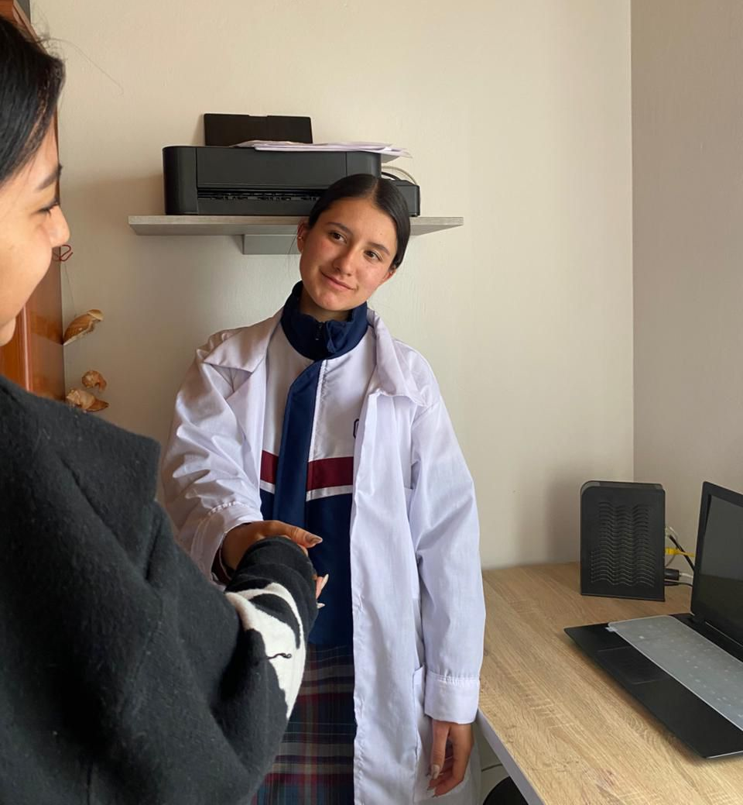
Objetivos Específicos
- Tener en cuenta las recomendaciones de nuestros usuarios.
- Obtener reconocimiento por buen servicio al cliente.
- Posicionarnos en el mercado nacional e internacional.
Justificación
Las empresas de redes dependen cada vez más de Internet y tecnología para operar. Requieren servicios profesionales para implementar y mantener redes y minimizar riesgos de fallos.
Network Technology busca altos estándares de calidad, seguridad y buen servicio, ofreciendo soluciones inalámbricas y cableadas y conectividad a zonas rurales.
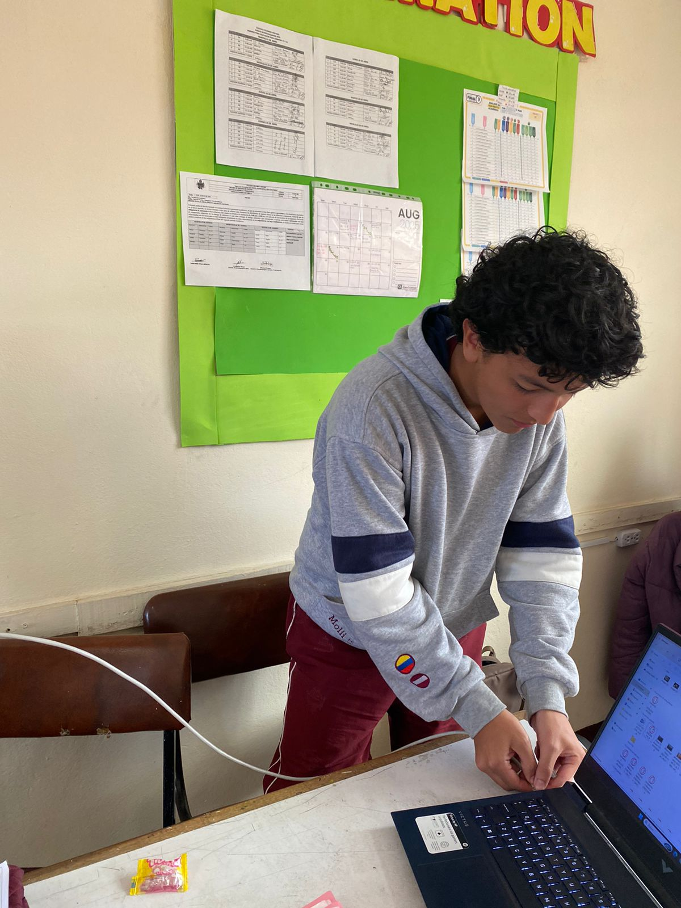
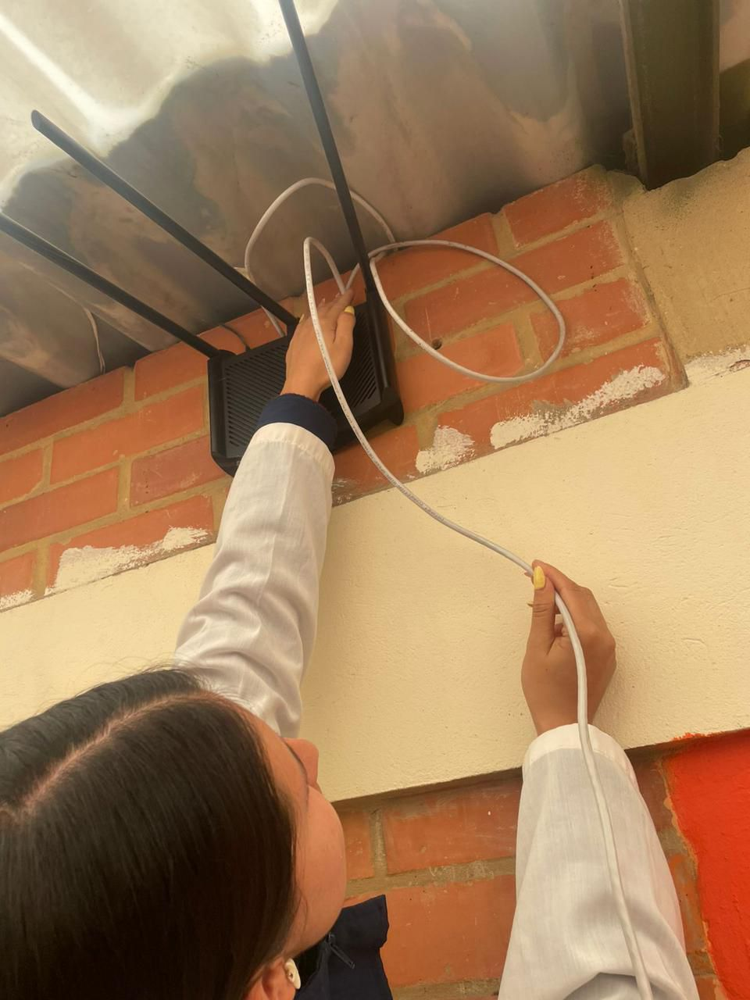
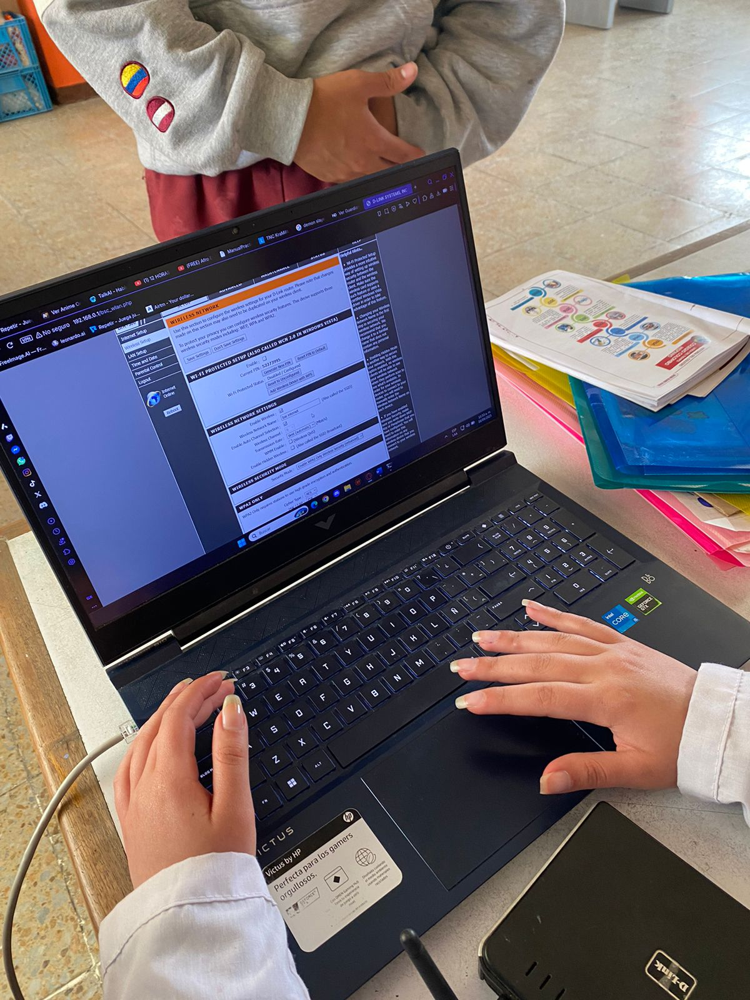
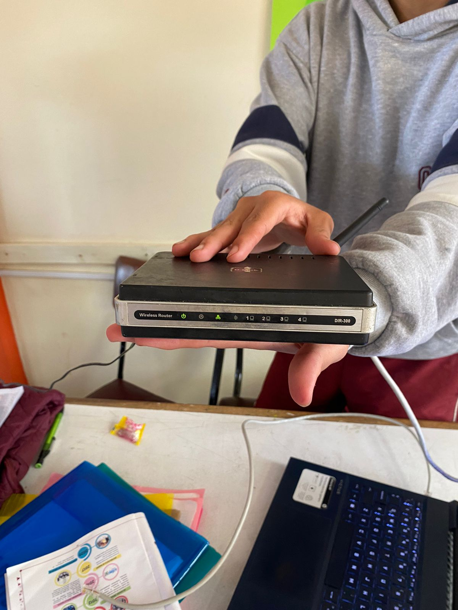
Instalación de redes
Diseñamos y ponemos en marcha la infraestructura de red, asegurando una conexión rápida, estable y adaptada a las necesidades de la empresa, ya sea por cableado estructurado o soluciones inalámbricas.
- Diseño e implementación de redes LAN, WAN y WLAN: se planifica la red más adecuada para la empresa, ya sea local, amplia o inalámbrica.
- Cableado estructurado (fibra óptica, cable UTP, coaxial): instalación ordenada de cables que garantizan velocidad y organización.
- Instalación de puntos de red y racks de comunicaciones: se colocan salidas de red y se organizan equipos en gabinetes especializados.
- Configuración de switches, routers, firewalls y access points: se preparan los equipos para que la red funcione de forma óptima y segura.
- Integración de redes cableadas e inalámbricas: conexión conjunta de sistemas con y sin cable para mayor flexibilidad
Costos
| Diseño e implementación de LAN/WAN/WLAN |
$2,000,000 – $8,000,000 |
| Cableado estructurado (UTP/Fibra) |
$200,000 – $600,000 |
| Mantenimiento preventivo anual |
$125.000 – $187.000 |
| Instalación de puntos de red y racks |
$800,000 – $3,200,000 |
| Configuración de switches/routers/firewalls |
$600,000 – $2,000,000 |
| Integración de redes cableadas e inalámbricas |
$1,200,000 – $4,000,000 |
Mantenimiento de redes
Realizamos revisiones preventivas y correctivas para garantizar que la red funcione sin interrupciones, corrigiendo fallas, actualizando equipos y optimizando su rendimiento.
- Diagnóstico y resolución de fallas en la red:Detección y reparación de problemas de conectividad.
- Monitoreo preventivo y correctivo de la infraestructura Supervisión constante para evitar fallas y corregirlas rápidamente.
- Actualización de firmware y software de equipos de red:Instalación de mejoras que aumentan la seguridad y estabilidad.
- Reemplazo de equipos dañados o desactualizados: Sustitución de hardware obsoleto o defectuoso.
- Optimización de la velocidad y estabilidad de la red:Ajustes técnicos para mejorar el rendimiento general.
Costos
| Diagnóstico y resolución de fallas |
$200,000 – $400,000 por hora |
| Monitoreo preventivo/correctivo |
$400,000 – $1,200,000 mensuales |
| Actualización de firmware/software |
$200,000 – $600,000 por equipo |
| Reemplazo de equipos dañados |
$800,000 – $20,000,000 |
| Optimización de la red |
$$400,000 – $1,200,000 |
Seguridad de redes
Protegemos la información y los sistemas de la empresa mediante firewalls, VPNs y políticas de control de acceso, evitando intrusiones y ataques cibernéticos.
- Implementación de VPNs para acceso remoto seguro:Detección y reparación de problemas de conectividad.
- Protección contra malware, intrusos y ataques Defensa activa frente a amenazas informáticas.
Más vendido
Implementación de VPNs
Configuración de accesos remotos seguros.
$600,000 – $1,600,000
Protección contra ataques
Software de protección + configuración avanzada.
$1,200,000 – $4,000,000
Conectividad Inalámbrica
Soluciones para alta densidad de usuarios
Controladores, APs de gama alta y software.
$750.000 – $800.000
Ampliación de cobertura con repetidores
Instalación + calibración de señal por repetidor
$400,000 – $1,000,000
Paquetes
Paquete Básico – Conectividad Inicial
Precio estimado: $6.000.000 – $12.000.000 COP
- Diseño e implementación de red LAN (hasta 10 puntos)
- Cableado estructurado UTP (hasta 10 conexiones)
- Instalación de 1 rack de comunicaciones básico
- Configuración de router y switch principal
- Soporte técnico remoto (10 horas mensuales)
Paquete Estándar – Seguridad y Soporte Continuo
Precio estimado: $16.000.000 – $32.000.000 COP
- Diagnóstico completo del estado actual de la red
- Optimización de la velocidad y estabilidad (balanceo de carga, QoS)
- Ampliación de cableado estructurado (hasta 20 puntos adicionales)
- Instalación de 2 Access Points de gama empresarial
- Soporte técnico presencial y remoto (20 horas mensuales)
Paquete Estándar – Optimización de Red
Precio estimado: $10.000.000 – $20.000.000 COP
- Incluye beneficios de Instalación y Mantenimiento
- Plan preventivo trimestral
- Precios preferenciales en ampliaciones
- Soporte prioritario y atención personalizada
Ventajas
¿Por qué elegirnos?
En Network Technology no solo instalamos y mantenemos redes: conectamos personas, ideas y oportunidades.
Sabemos que para ti la tecnología no es un lujo, sino una herramienta esencial para que tu negocio funcione sin interrupciones. Por eso, trabajamos como si cada cable, cada configuración y cada detalle fueran para nuestra propia empresa.
Nos eligen porque respondemos rápido, hablamos claro (sin tecnicismos innecesarios) y no descansamos hasta dejar todo funcionando como debe. Además, cuidamos tu inversión con soluciones seguras, escalables y pensadas para durar.
Aquí no eres un cliente más: eres un aliado. Y cuando trabajas con nosotros, tienes la tranquilidad de contar con un equipo que se preocupa de verdad.
Beneficios de nuestro servicio de mantenimiento de redes
Con nuestro servicio especializado, garantizamos que tu infraestructura de red se mantenga estable,
segura y preparada para el crecimiento de tu empresa. Estos son los principales beneficios:
✔ Actualización oportuna
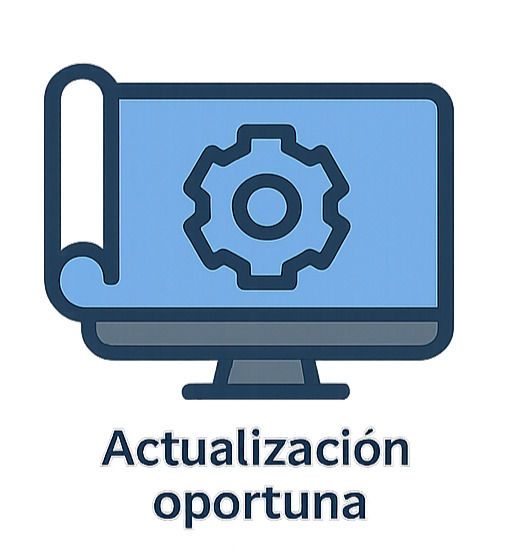
La mejor solución para aumentar la productividad del equipo y reducir costos, sin necesidad de comprar uno nuevo.
Nuestros ingenieros aseguran que tu empresa se mantenga competitiva con actualizaciones periódicas.
✔ Solución rápida de problemas
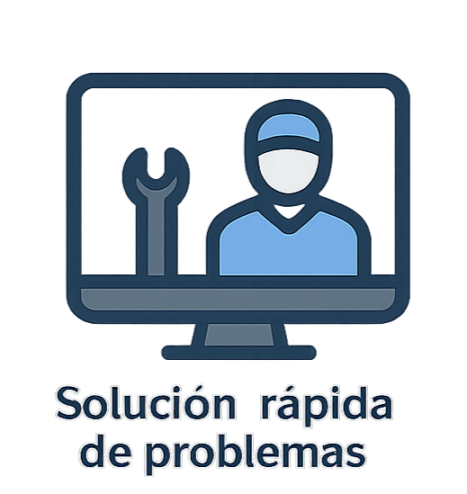
Auditamos la red, identificamos el problema y lo resolvemos con rapidez. Documentamos la solución para
mantener la continuidad y estabilidad de tu infraestructura.
✔ Reparar y aumentar las redes
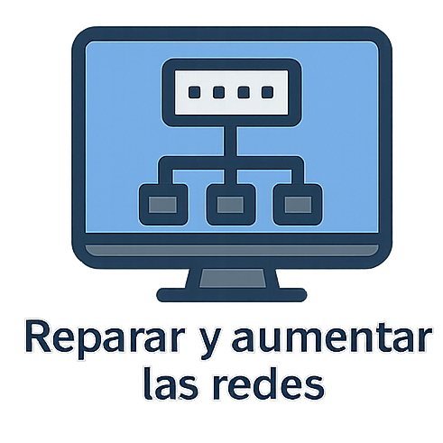
Aumentamos la productividad mediante conexiones adicionales, servidores y almacenamiento.
Reducimos tiempos de inactividad y mejoramos la capacidad de tu red.
✔ Tolerancia a fallos

Implementamos conexiones redundantes para garantizar continuidad operativa, incluso ante fallos.
Tu red se mantiene confiable y preparada para cualquier eventualidad.
Sostenibilidad
En Network Technology estamos comprometidos con un futuro más sostenible y con el impacto positivo en nuestro entorno. Nuestra estrategia de sostenibilidad se basa en tres pilares:
1. Ambiental
- Optimizamos el consumo energético en nuestras instalaciones y promovemos el uso de equipos y tecnologías eficientes.
- Reciclamos equipos electrónicos obsoletos y fomentamos la reducción de residuos.
- Colaboramos con programas de reforestación y conservación en las comunidades donde operamos.
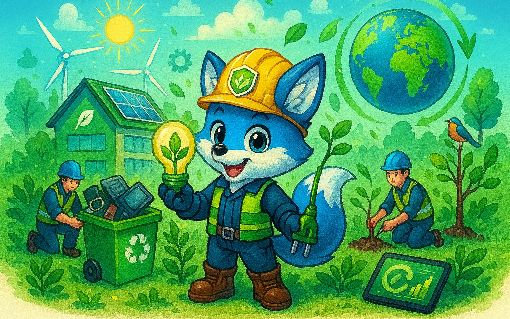
2. Social
- Apoyamos la capacitación tecnológica en comunidades y escuelas locales.
- Promovemos la inclusión digital, asegurando que más personas tengan acceso a internet y a la educación tecnológica.
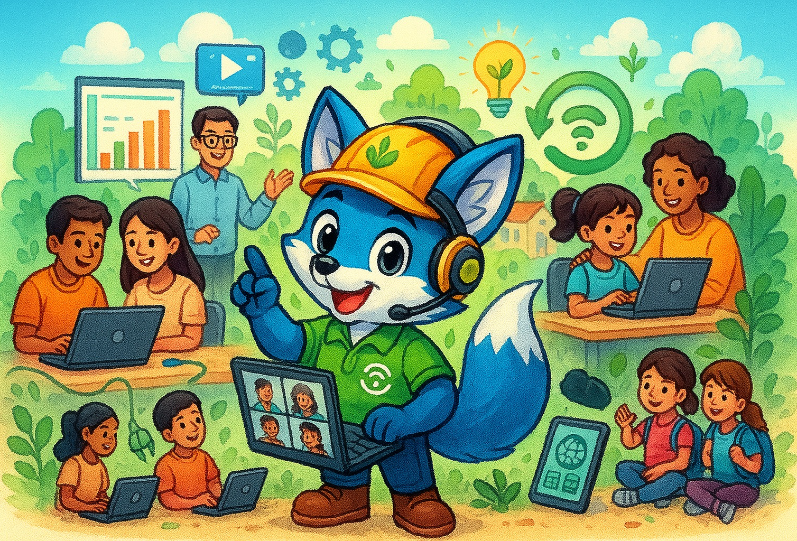
3. Económico
- Adoptamos prácticas de negocio responsables que aseguran la continuidad y crecimiento sostenible de la empresa, generando valor para clientes, empleados y la comunidad.
Compromiso: Creemos que la tecnología debe ir de la mano con el respeto al planeta y las personas, por eso cada proyecto se realiza pensando en minimizar su impacto ambiental y maximizar su beneficio social.
Nuestra responsabilidad
Nos preocupamos por generar un impacto positivo en diferentes ámbitos: corporativo, social y empresarial.
Implementamos acciones que benefician tanto a nuestros colaboradores como al medio ambiente y la comunidad.
Corporativo
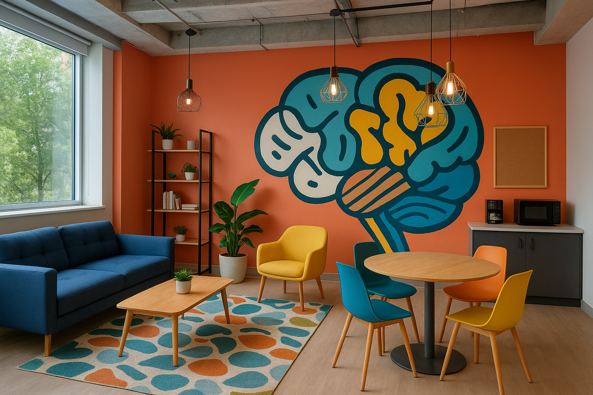
Espacios diseñados para que los trabajadores salgan de la rutina diaria y disfruten de un mejor ambiente laboral.
Social

Contribuimos al medio ambiente a través de la donación de árboles y programas de mejora ecológica.
Empresarial
Brindamos instalaciones adecuadas que favorecen el desarrollo, bienestar y seguridad de nuestros trabajadores.